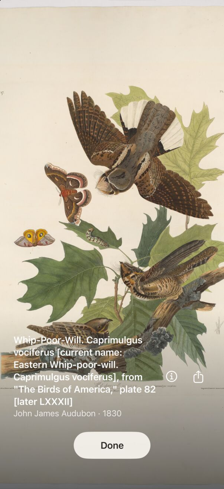

I 揭示
专注，雾便散去
每次专注，都会在一层轻柔飘动的雾后挂上一幅新画。随着时间流逝，雾从中心向外散开，你无需盯着时钟，也能感受到自己的进展。
- 0:00 时完全揭开，并附上一张博物馆展签：你专注的事、作品名、艺术家与年代。
- 从不等待网络。开始之前，画作就已准备就绪。
- 离开再回来也无妨。即使锁定了手机，计时依然准确。
一款适用于 iPhone 和 iPad 的专注计时器
选好要专注多久。在你工作时，一幅来自大都会艺术博物馆的杰作会从雾中慢慢浮现；到 0:00，它完全揭开，归你珍藏。


免费，无广告。适用于 iPhone 和 iPad。

展览导览
没有积分，没有宠物，没有喧闹。只要你专注于手头的事，一幅画就会慢慢映入眼帘。
I 揭示
每次专注，都会在一层轻柔飘动的雾后挂上一幅新画。随着时间流逝，雾从中心向外散开，你无需盯着时钟，也能感受到自己的进展。


II 你的画廊
完成的专注会挂进你自己的画廊。日积月累，它会成为一份安静的记录，记下你为之付出时间的一切。

III 随心设定
写下你正在做的事，或选一个主题：学习、写作、阅读、创作。然后选择单次专注或一组番茄钟，从五分钟到两小时。


IV 你的专注，用数字呈现
看看你的专注时长、画作数量和最长连续天数，一目了然的一周，以及记下你每个专注日的日历。

V 应用之外
今日画作小组件每天早晨都藏在雾中。你每专注一分钟，雾就散去一些，直到达成每日目标，画作完全揭开。

VI 白天与夜晚
白天是一面温暖明亮的墙，深夜专注时则是一间烛光映照的炭灰色展厅。任选其一，或让 Easel 跟随你的 iPhone 设置。


VII 赞助
Easel 免费，没有广告，也没有订阅，由一人独立开发。如果它为你的日子带来了些许平静，一份一次性的礼物能让它继续走下去。它不会解锁任何东西，因为 Easel 的一切本就属于你。
为那些让应用更好的细致笔触。
为接下来的一切添上新色彩。
把整件作品挂上墙。真正的赞助人之礼。
参观须知
Easel 的图文分步指南，以及大家最常问的问题解答。如果你在应用里迷了路，来这里就能找回方向。
正在展出
Easel：专注计时器与名画。适用于 iPhone 和 iPad，需要 iOS 17 或更高版本。